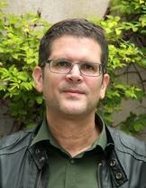

About the project
PrEP-ing at the end of HIV/AIDS: an anthropological study of Combination Prevention and PrEP in Argentina is a project associated with a Marie Skłodowska-Curie Actions Postdoctoral Individual European Fellowship. It is funded by the European Union under Horizon Europe (Grant Agreement No. 101200133).
The project examines the implementation of Combination HIV Prevention strategies, with a particular focus on Pre-Exposure Prophylaxis (PrEP) in Argentina. Drawing on medical anthropology, the anthropology of public policies and science and technology studies, it explores how global-local entanglements involving biotechnologies, institutions, policymakers, health professionals, activists and PrEP users and their experiences, come together in the making of a public policy: Combination Prevention.
- Coordinator
- Freie Universität Berlin (Germany)
- Project duration
- October 2025 – September 2027
- Total EU contribution
- €217,965.12
Further information about the project is available on the CORDIS website.
Main researcher
Dr. Agostina Gagliolo
Marie Skłodowska-Curie Individual Postdoctoral Fellow, Freie Universität Berlin
Agostina Gagliolo holds a PhD in Anthropology from the University of Buenos Aires (Argentina).
Her work, situated at the nexus of Medical Anthropology, Science and Technology Studies, and the Anthropology of Policies and Institutions, focuses on the contemporary governance of the HIV/AIDS epidemic, with emphasis on the transformations in global health policies and biotechnologies, particularly in light of their articulation with the local level and the experiences of people engaged in long-term treatment.
She has received several merit-based fellowships, including doctoral and postdoctoral fellowships and academic exchange grants in the U.S. and Brazil.
She is a member of research groups in Germany, Argentina and Brazil, and has taught several courses in medical anthropology at the graduate and undergraduate levels in the University of Buenos Aires and the National University of José C. Paz (Argentina). She is currently editor-in-chief for the scientific journal “PUBLICAR – en Antropología y Ciencias Sociales”, and has also engaged in collaborative work with Argentina's National HIV/AIDS Directorate, LGBTQ+ and HIV-related civil society organizations. She is a board member for the Latin American Anthropology Association (ALA) and has been a board member for the Argentinian Anthropologists’ Professional Association (CGA).
Project supervisor

Prof. Dr. Hansjörg Dilger
Professor of Social and Cultural Anthropology at Freie Universität Berlin and Director of the Collaborative Research Centre 1171 “Affective Societies”
His research examines notions and practices of a “good life” in contexts of social, political, and economic transformation. Building on diverse theoretical approaches from social and cultural anthropology - critical medical anthropology, anthropology of religion, anthropology of ethics and morality, political anthropology, anthropology of affect and emotion - he explores how the dynamics of moral and political (re)orientation, is not only shaped by specific social and material environments, but also co-constitutes these environments in significant ways. The processes of subjectification and (re)negotiation of social relations that accompany such dynamics point to the multilayered conflicts and ruptures that are involved in the social differentiation of lifeworlds in the context of urbanization, mediatization, and global connectivity. They also draw attention to the emerging relations and aspirations that are being formed in the struggle for possible modes of human co-existence against the backdrop of postcolonial inequalities and dependencies.
Ethnographically, he has addressed these overarching themes in two monographs - on the (re)negotiation of social and family relations in the context of HIV/AIDS and rural-urban migration in Tanzania, and on the micro-politics of moral becoming in Christian and Muslim schools in the segregated education market of Dar es Salaam. Currently, he is preparing a third monograph dealing with the epistemic repositioning of 'powerful objects' in ethnographic collections in Berlin in the context of (post-)colonial violence and power relations.